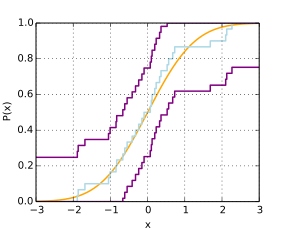

Previously in this miniseries on testing samplers, I laid out the problem that statistical testing is inherently more fraught than conventional software testing, and set up a basic framework for defining dependable error-calibrated statistical tests of stochastic software. I have since learned a great inequality, and can now lay out a more complete set of practical basic tests.
To recap, the problem with testing samplers is that even a correct sampler can emit arbitrarily weird-looking output by sheer chance, and even a badly incorrect one can accidentally produce a good-looking run during testing. There’s hope, though: the probability of weird stuff falls as one draws more samples, and as one loosens the threshold of what counts as “weird”. So the general strategy for testing samplers is to draw so many samples, and to fail the test only on results that are so outlandish, that the probability of a correct code base triggering a failure in the test suite by chance becomes negligible; say \(10^{-9}\).
So our statistical test suite passes. Does that mean we’re done? No, because we also need to make sure that incorrect code has a negligible probability of not triggering a test failure. Unfortunately, this can’t be done perfectly: no matter how many samples we draw, and no matter how tightly we set the criteria for each test passing, it’s always possible to have a bug whose effects are so mild or so rare that our test suite can’t reliably detect it. The best we can do is calibrate: compute the “size” of the mistake we can reliably detect, and draw enough samples to drive that size small enough to give us confidence that our software is, in fact, correct.
So, how many samples is “enough”? The technical component of that problem is the subject of this post. Let us focus today on one-dimensional continuous testing. That’s not as restrictive as it may at first seem, because much can be learned about multivariate distributions by composing multiple tests on projections (or other probe functions); and discrete spaces can, as a last resort, be embedded into \(\R\) by adding an ordering on the elements. There are also facts and algorithms that can be used for discrete stuff, but that will have to wait for another post.
Contents
The Inequality
Without further ado, suppose we have some sampler \(s\) that emits real-valued samples \(x_i \in \R\) and we want to check its properties. The workhorse for this setting is the Dvoretzky-Keifer-Wolfowitz inequality. It was originally proven by the eponymous mathematicians in 1956 with an unknown constant. It became unquestionably practically usable for statistical testing in 1990, when P. Massart determined the constant to be 2.
The inequality gives a stochastic bound on the discrepancy between the sampler’s true cumulative distribution function (CDF) \(F\) and the empirical cumulative distribution function \(F_n\) obtained from drawing \(n\) independent samples:
\[ \Pr\left(\sup_{x \in \R}|F_n(x) - F(x)| > \eps\right) \leq 2e^{-2n\eps^2}. \]
The bounded supremum of the left hand side is called the Kolmogorov-Smirnov distance (K-S for short), in this case between the true and empirical CDFs. The bound is an upper bound on the probability of this distance being large. The important thing for our purposes is that this bound holds for finite sample counts \(n\) rather than just asymptotically. We will use it to turn empirical samples into confidence envelopes on the true CDF they were drawn from, for example like this:

The blue staircase is an example empirical CDF, whose true CDF is, in this case, the smooth curve in orange. The DKM(W) inequality lets us form the confidence envelope in purple, and bounds the probability that the true CDF escapes it.
The Tests
Armed with the DKW(M) inequality, we can form an array of calibrated statistical tests for various situations.
Goodness of Fit vs K-S Distance
Suppose the target CDF \(F\) is analytically and computationally tractable (e.g., we are trying to test a sampler for something like the Gamma distribution). Then two applications of DKW(M) give a calibrated test that the program \(s\) samples from \(F\).
The test has two parameters, \(n\) and \(\eps\). The test procedure is to
- Draw \(n\) samples from \(s\);
- Form the empirical CDF \(F_n\);
- Compute the K-S distance \(d = \sup_{x \in \R}|F_n(x) - F(x)|;\) then
- Pass if \(d \leq \eps\) and fail otherwise.
To analyze this as a calibrated test, we need an additional (purely analytic) parameter \(\delta\), for the K-S distance from correctness. We derive the test’s pass/fail properties as follows:
The test should pass when \(s\) samples from exactly \(F\).
Applying DKW(M) to \(F\) and \(F_n\) directly gives an upper bound on the false-failure rate \(\alpha\) of this test, giving \[\alpha \leq 2e^{-2n\eps^2}.\]
The test should fail when the true CDF \(G\) of \(s\) differs in K-S distance from \(F\) by at least \(\delta + \eps\).
For the test to pass, the empirical CDF \(F_n\) has to fall within \(\eps\) of \(F\). For this to happen when the test should fail, the empirical CDF has to fall least \(\delta\) from its actual CDF \(G\). Applying DKW(M) to \(G\) and \(F_n\) therefore bounds the false pass rate \(\beta\): \[ \begin{align*} \beta & = \Pr\left(\sup_{x \in \R}|F_n(x) - F(x)| \leq \eps\right) \\ & \leq \Pr\left(\sup_{x \in \R}|F_n(x) - G(x)| > \delta\right) \\ & \leq 2e^{-2n\delta^2}. \end{align*} \]
To decide how many samples to draw, then, it suffices to choose acceptable error rates \(\alpha\) and \(\beta\), and an acceptable guarantee gap \(\eps + \delta\), and solve the above inequalities for \(n\) and \(\eps\).
K-S Tolerant Goodness of Fit vs K-S Distance
The previous procedure can also be viewed as a test for approximate equality under K-S distance, namely a test that the true CDF of the sampler \(s\) does not differ in K-S distance from the target CDF \(F\) by more than a tolerance \(\zeta < \eps\). This \(\zeta\) is an analytic parameter: its only effect is to change the definition of when the test should pass to include all CDFs within \(\zeta\) of \(F\), and change the false failure rate bound to \[ \alpha \leq 2e^{-2n(\eps - \zeta)^2}. \]
Stands to reason: If we widen the definition of “should pass” to include everything up to \(\zeta\), the chance of something that should pass producing a result more than \(\eps\) away increases.
Equality in Distribution vs K-S Distance
We can use the same inquality to construct a calibrated test that two samplers \(s_1\) and \(s_2\) are sampling from the same (one-dimensional) distribution.
The test again has two parameters, \(n\) and \(\eps\). The test procedure is, of course, very similar to the last one:
- Draw \(n\) samples from \(s_1\) and \(n\) samples from \(s_2\);
- Form the empirical CDFs \(F_{1n}\) and \(F_{2n}\);
- Compute the K-S distance \(d = \sup_{x \in \R}|F_{1n}(x) - F_{2n}(x)|;\) then
- Pass if \(d \leq \eps\) and fail otherwise.
The analysis differs only in that each bound forces us to use DKW(M) twice. We again use the distance from correctness \(\delta\), and obtain
The test should pass when \(s_1\) and \(s_2\) both sample from some unknown CDF \(G\).
Suppose this is so. Suppose the K-S distances of the obtained empirical samples \(F_{1n}\) and \(F_{2n}\) from \(G\) are \(d_1\) and \(d_2\), respectively. Then for the test to fail, we must have \(d_1 + d_2 \geq d > \eps\). Then, applying DKW(M) to \(F_{1n}\) and \(G\) and to \(F_{2n}\) and \(G\), we bound1 the false failure rate \(\alpha\) as \[ \begin{align*} \alpha & = \Pr\left(\sup_{x \in \R}|F_{1n}(x) - F_{2n}(x)| > \eps\right) \\ & \leq \Pr\left(\sup_{x \in \R}|F_{1n}(x) - G(x)| > d_1\right) \cdot \Pr\left(\sup_{x \in \R}|F_{2n}(x) - G(x)| > d_2\right) \\ & \leq 2e^{-2nd_1^2} 2e^{-2nd_2^2} \\ & \leq 4e^{-2n\eps^2}. \end{align*} \]
The test should fail when \(s_1\) samples from some unknown CDF \(G_1\), \(s_2\) samples from the equally unknown \(G_2\), and the K-S distance between \(G_1\) and \(G_2\) is at least \(\eps + \delta\).
Suppose this is so, and suppose again that the obtained K-S distances between the empirical samples and their respective CDFs are \(d_1\) and \(d_2\). Then, for the test to pass by chance, we must have \(\eps + \delta \leq d_1 + \eps + d_2\). By the same double application of DKW(M), that gives us a false pass rate bound of \[ \beta \leq 4e^{-2n\delta^2}. \]
Deciding how many samples to draw is again a matter of finding some \(n\) and \(\eps\) that yield acceptable error rates \(\alpha\) and \(\beta\), and an acceptable guarantee gap \(\eps + \delta\).2
K-S Tolerant Equality in Distribution
We obtain the tolerant version exactly the same way as when the target CDF \(F\) is known. To wit, if we wish to declare that the test should pass when \(G_1\) and \(G_2\) differ in K-S distance by at most \(\zeta < \eps\), we find that the same test procedure yields \[ \alpha \leq 4e^{-2n(\eps - \zeta)^2}. \]
Bounds on the Mean and Other Statistics
So much for equality in distribution. But with more complex samplers, we often don’t have useful distributional invariants to work from. Fortunately, we do often analytically know what the mean of one or another probe should be, and DKW(M) gives a way to test that, too.
The critical observation is that, if the support of \(s\) has an upper bound, then a confidence envelope on the true CDF also gives a confidence bound on the mean. Indeed, if the true CDF is within an \(\eps\) envelope of the empirical CDF, then it only has \(\eps\) probability mass of freedom. The most it could do to push the empirical mean up would be to put all that mass on the upper limit of the support, and we can efficiently compute what mean that would lead to. Likewise for lower bounds. The computation is very simple.3 In pseudo-code
def maximum_mean(samples, eps, upper_bound):
n = len(samples)
samples_left = ... # discard eps * n smallest samples
return mean(samples_left) + eps * upper_boundFrom this, we can derive calibrated tests on the mean of a sampler. We can test whether the mean is some known value, or lies in some known interval (vs lying at least \(\delta\) away); we can also test whether the means of two samplers are equal, or within \(\zeta\) of each other (vs being at least \(\zeta + \delta\) away). This also scales cleanly to arbitrary-dimensional distributions, because a vector mean is determined by its projections.
The same trick also works for the median, and arbitrary percentiles. Similar games also give probabilistic bounds on the variance, the entropy, and mutual information.
Sampler-Density Agreement
One specific application I find relevant in my capacity as maintainer of a statistical library is checking whether a (multivariate) sampler \(s\) samples according to a given density function \(f\). In the univariate case, we typically have the CDF, so we can just use the equality in distribution test.
CDFs don’t really work for multivariate distributions, but there is still something we can do. Suppose for the moment that the support of the distribution is the compact set \(S \subset \R^n\), with known volume \(|S|\). Suppose further that the density \(f\) is bounded away from zero on \(S\), i.e., we have a positive real number \(h\) for which \(\forall x \in S, f(x) > h\). Then we have an interesting invariant we can use.
The trick is to estimate the volume of \(S\) by using the testee \(s\) as a proposal for an importance sampler. If \(s\) is really sampling according to the density \(f\), the mean weight will be the volume \(|S|\). To wit, consider the distribution on real numbers given by \(1/f(x)\) for \(x\) drawn from \(s\). What is its mean? If \(s\) is sampling according to the probability density \(f\), we will have \[ \E_{x \sim s}\left[\frac{1}{f(x)}\right] = \int_S \frac{1}{f(x)} f(x) dx = \int_S 1 dx = |S|. \] The distribution on \(1/f(x)\) is of course bounded below by \(0\), and our lower bound \(h\) on \(f\) turns into an upper bound \(1/h\) on \(1/f\), so we can proceed to test this invariant using the mean confidence intervals we worked out previously. It’s not a perfect check (e.g., \(s\) is free to mis-weight points within any equal-value levels of \(f\)), but it’s better than nothing.
Even if the support of the distribution we are interested in is not compact, or if the density approaches \(0\), we can still salvage something by testing a restriction of the distribution of interest. The only non-mechanical part is choosing a restriction domain and proving a lower bound on the density within that domain.
The Performance
The measure of speed for our statistical tests is \(n\), the number of samples we have to draw from \(s\). As you can see from the above results, this will be logarithmic in the desired error rates, so there isn’t much reason to tolerate flakiness. Unfortunately, the performance is also quadratic in the test resolution \(1/\eps\). This comes from the \(n\eps^2\) term in the exponent of the DKW(M) bound. I don’t know that there’s much that can be done about that, except to keep the computational cost in mind when setting one’s test resolutions. In particular, the Law of Large Numbers suggests that a precision of \(O\left(\sqrt{n}\right)\) is about what we should expect where sums are involved.
The Alternatives
There are other inequalities on which finite-sample statistical testing can be based. In a previous post I worked out a test for binary probability distributions based on the CDF of the binomial distribution. There is also a rich literature of other so-called “property testing” algorithms, including a very nice survey of methods applicable to discrete distributions in Gautam Kamath’s MIT doctoral dissertation “Modern Challenges in Distribution Testing” (September 2018).
The one point I would like to bring up from there is that different methods are sensitive to different notions of distance in distribution, and have different sample efficiency. For example, consider testing whether a sampler \(s\) samples from a given discrete distribution on \(M\) objects. One approach would be to choose an ordering on those objects, embed them in the interval \([0, M) \subset \R\), and use the DKW(M)-based continuous test given at the beginning of this post. This will detect discrepancies exceeding \(\eps\) Kolmogorov-Smirnov distance in \(O\left(1/\eps^2\right)\) samples.
Alternately, Gautam gives a test that detects discrepancies exceeding \(\eps\) total variation distance in \(O\left(\sqrt{M}/\eps^2\right)\) samples, and refers to a proof that this is asymptotically optimal.4 This test can of course also be applied to (even multidimensional) continuous distributions by binning. Depending on which distance is more salient to the types of software errors one’s test suite is looking for, one method or another can give favorable performance.
The Summary
In this post, we studied the Dvoretzky-Keifer-Wolfowitz (and Massart) inequality, and worked out how to use it for a wide variety of calibrated statistical tests for checking correctness of samplers. DKW(M) leads to simple test procedures with exact finite-sample guarantees on both false fail and false pass rates.
While DKW(M) is straightforward and general, tests based on other inequalities may yield better sample efficiency and/or more intuitive notions of distribution distance in the situations where they apply.
The Notes
I conjecture that the 4 in the final bound can be brought down by using the one-sided version of the DKW(M) inequality, and taking advantage of the fact that \(s_1\) and \(s_2\) have to deviate from \(G\) in opposite directions to cause this test procedure to fail.↩︎
If one of \(s_1\) or \(s_2\) is significantly more expensive to sample from than the other, it’s possible to squeeze a little performance out of drawing more samples from the cheaper one, rather than the same \(n\) from each. I leave that extension for the intrepid reader to work out on their own.↩︎
The only tricky thing is that, if \(\eps n\) is not an integer, we should keep that sample, but down-weight it in the mean computation. The point is to discard \(\eps\) worth of probability mass from the empirical sample before taking its mean, and then to add back the upper bound of the support, weighted by \(\eps\).↩︎
These results are consistent with each other, because a potentially large total variation distance can still look like a small Kolmogorov-Smirnov distance, if the ordering lines up wrong. Indeed, TVD can be \(O(M)\) times larger than K-S between the same two distributions.↩︎